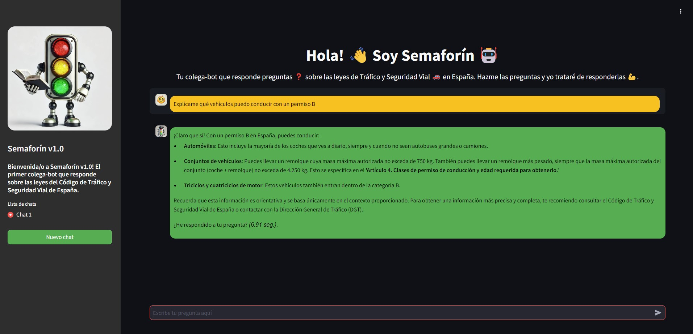

TFM: Proyecto basado en el desarrollo de un modelo (LLM) basado en Retrieval-Augmented Generation (RAG) para la resolución de preguntas relacionadas con el tráfico y la seguridad vial en España. Recibió una calificación final de 9,5.
Análisis y desarrollo de un modelo de clasificación binaria para distinguir entre dos clases en un conjunto de datos, utilizando técnicas de machine learning avanzadas.
Se llevó a cabo un análisis de la serie temporal de temperaturas medias mensuales en Santiago de Compostela entre 2010 y 2023, utilizando modelos de suavizado exponencial y SARIMA para predecir temperaturas futuras.
Desarrollo de un dashboard interactivo con Tableau para analizar las ventas de varios países en 2015, proporcionando una visión completa del rendimiento de ventas.

Creación y desarrollo de una tienda online de ropa deportiva, con un enfoque en UX/UI y estrategias de marketing digital para atraer clientes.